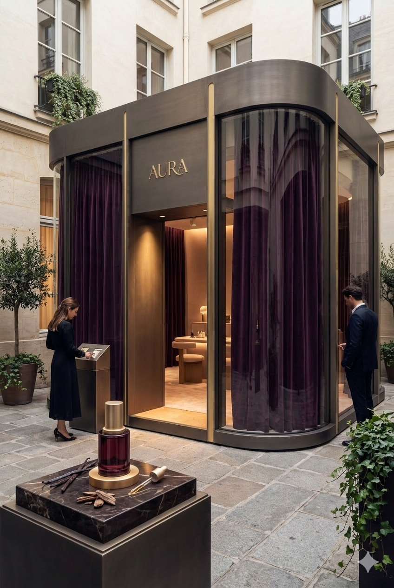
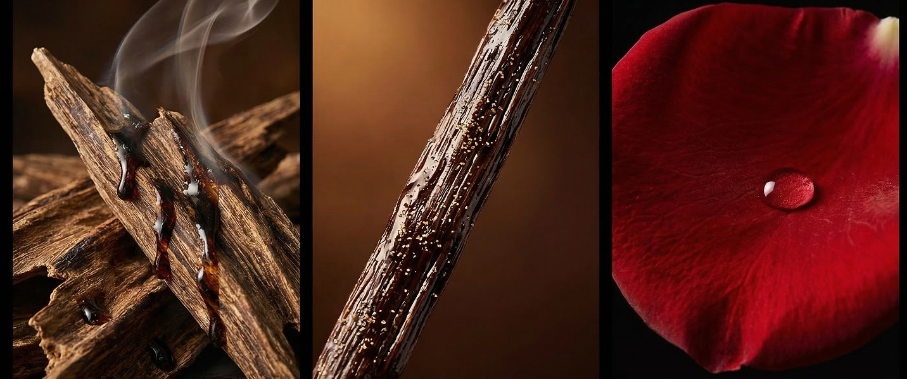

Journal AURA
Chroniques & Découvertes
Retrouvez ici toute l'actualité de la maison. Événements, savoir-faire, et explorations olfactives, à lire sans interruption.

Événement — Septembre 2026
Un écrin éphémère au cœur de Paris
La maison AURA Parfums a le plaisir de vous annoncer l'ouverture de son tout premier pop-up store, situé dans le Marais à Paris. Pensé comme un temple dédié au silence et à l'art du geste, cet espace éphémère est une véritable introduction physique à notre univers.
Jusqu'au 30 septembre, venez découvrir l'intégralité de nos huiles précieuses et initiez-vous à nos protocoles d'application. Chaque présentation est intimiste et vous permet une dégustation olfactive personnalisée. Profitez-en pour y faire graver vos flacons directement sur place et échanger avec nos conseillers sur le choix de votre future signature olfactive.

Savoir-Faire — Août 2026
Le bois d'Oud, joyau de l'Oriental mystérieux
Si l'Onyx et l'Élixir Prohibé sont des fragrances dotées d'une telle présence, elles le doivent en grande partie à la qualité inouïe de nos bois de Oud, sélectionnés parmi les plus grandes réserves du Cambodge.
Le bois d'agar, ou "Oud", produit sa puissante résine uniquement lorsqu'il est exposé à certains champignons sauvages au cours de dizaines d'années. C'est ce processus naturel, lent et imparfait qui crée sa profondeur. Contrairement aux assemblages de synthèse couramment utilisés, le véritable Oud brut vibre au fond du sillage. Il dévoile à son porteur des facettes animales, douces et fumées qui évoluent magnifiquement sur la peau au fil de la journée. Un luxe brut que la maison AURA s'engage à préserver et sublimer sans artifices.

Collection — Juillet 2026
Le Prélude : S'initier à la Collection Privée
Choisir une nouvelle signature olfactive est un acte de pure intimité qui requiert l'opportunité d'apprivoiser le parfum. C'est dans cet esprit que le coffret découverte "Le Prélude" a été conçu, devenant aujourd'hui la pièce emblématique pour s'initier aux gestes AURA.
Composé des quatre huiles signatures de la maison, ce coffret de miniatures élégantes offre l'expérience authentique de nos élixirs. Testez chaque parfum à un instant chaud puis laissez évoluer ses accords pour choisir en toute confiance. Que ce soit sur le sternum sous vous vêtements ou délicatement glissé dans la nuque pour se dévoiler, l'essai prolongé permet d'identifier votre véritable identité olfactive, tout en constituant un présent d'une subtilité rare pour vos proches.